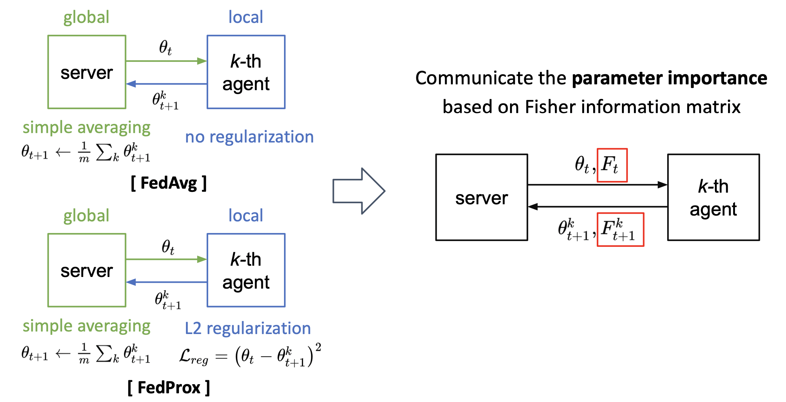

|
I am a Ph.D Student in the Computer Vision Lab of Seoul National University, Korea, under the supervision of Prof. Bohyung Han. Research InterestNeural Rendering, 3D Human/Scene Reconstruction, SMPL, Computer Vision, 3D Vision, Deep LearningContact infoCV | Google Scholar | Github Email: mijeong.kim (at) snu.ac.kr |
Education
- PhD, EE, Seoul National University, Korea (2019 - in progress)
Advisor: Prof. Bohyung Han - BS, NAOE, Seoul National University, Korea (2014 - 2019)
Valedictorian and Summa Cum Laude GPA: 4.1/4.3 - Gyeongnam Science High School (2012 - 2014)
Early Graduation(3Y→2Y), Major in Physics
Awards & Honors
- Kwanjeong Ph.D. Fellowship (2019-2021)
Given by a prestigious foundation that provides the largest amount of scholarships annually. - Science and Engineering Scholarship by President (2014-2018)
Full Funding. The most prestigious scholarship in the republic of Korea - Talent Medal of Korea, Presidential Medal (2014)
Physics area. It recognizes those individuals who are likely to become Korea’s future leaders and have performed exemplary talents or outstanding meritorious service.
Research Projects
|
InfoNeRF: Ray Entropy Minimization for Few-Shot Neural Volume Rendering
|
 |
Overcoming Forgetting in Federated Learning via Importance From Agent
|
|
OpenGL Projects |


Teaching Assistant
- Samsung Electronics, Korea (Jul 2019 & Jul 2020)
- Hyundai Motors, Korea (Mar 2020 - Jun 2020)
Digital Computer Concept and Practice Introduction to Python, Dept. of EE in SNU
Grants
Deep Learning-Based Pedestrian Removal with Multi-View Data- Fund by Naver (Sep 2019 - Aug 2020)